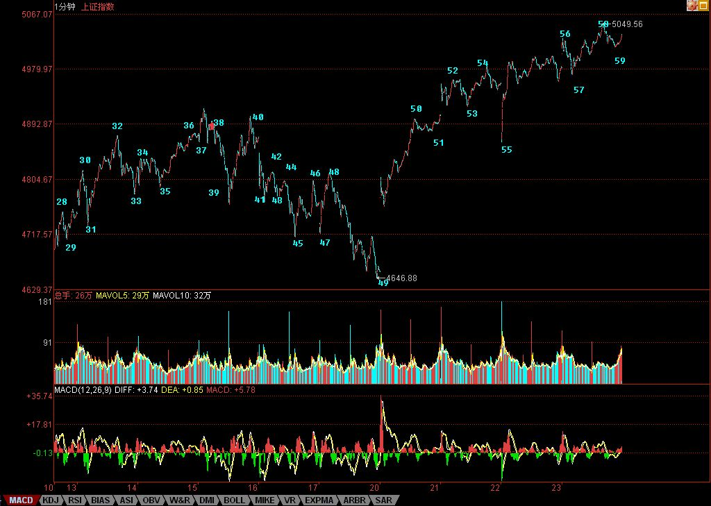

行情只会在一地鸡毛中高潮
2007/8/23 16:08:01
没有三线股参与的行情，永远都是不完整的，行情只会在一地鸡毛中高潮，没有三线股鸡毛一地的高潮，这种行情，至少在中国特色的市场中，本ID还没见过。这里的原理很简单，一个爱好群众运动的文化中培养起来的投资者，连选秀都可以超女快男一地去鸡毛一把，股票不亦如此，怎么对得起博大精深这四个汉字？
这锅热度如期中升高，三线鸡毛开始满地打滚，这还只是开始，被一线大盘、高价股抛弃了的散户，才正开始撒着步子欢了起来。人类的本质是酒神性的，人的本质中，那酒神的狂欢永远可以战胜太阳的冷酷。狂欢，总是大众的。茅台、五粮液去大众，要困难点，还是二锅头、老白干，更能激发人们心里的野性。如此，股票的高潮，总是老白干的。
有人问，怎么还不说今天突破5000点的历史时刻？5000点算个什么？本ID不是一大早就把股市的20年走势的剧本都告诉各位了？5000点在那剧本中，连一句台词都够不上，有什么可说的？
站在纯技术上，突破1/2线，就看2/3线，然后就是3/4线。但现在，还是先看2/3线。从大盘对前几条线的突破看，都不是刚好触及就回头，而是围绕着其震荡。由于2/3线与3/4线之间距离不大，所以在这两线的震荡级别不大会一样，一般来说，2/3线小级别，那么3/4线级别就大点了。所以，行情在2/3线附近如何发展，对今后行情的发展，有一定的意义。2/3线如何计算？1429+183302/3=5089。3/4线，只要把里面的2/3改为3/4就可以。当然，下月计算时，183要变成184，如此类推。
短线技术上，昨天的56，不能100%的那种情况，今天发生了。这说明什么？本ID的理论是几何，没有一种精确的数学态度，是弄不好的。任何有预测癖好的，都离技术之门远着。今天图里，昨天56的位置就要根据这种情况变了。注意，并不是本ID的划分可以随意变，而是因为昨天的走势没有100%满足本ID的划分标准，只是暂时标记。例如，今天59，同样有这个问题，那里标记上59并不是说59在那里已经完成了，因为目前没有满足59段被100%破坏的标准。而58以及以前的所有标准都是唯一的，不可更改的，为什么？因为，符合标准了，就这么简单。这个问题，一就是一，二就是二，没有任何可含糊的地方。
个股方面，给各位一个技术面上的判断标准。现在的个股，日线上无非三种：一、突破530高位；二、没突破530高位但突破530后第一个反弹高位；三、530后第一个反弹高位还没突破。
一般来说，第一种技术条件的股票，注意那些刚突破后回抽确认正再次启动的，这种股票要预防假突破的危险；第二种，属于最有表现欲望的，但这种股票的预防启动突破530高位后有一串洗盘；第三种，最容易吸引踏空资金，但唯一的坏处就是，资金新近来，如果是一个喜欢打压吸货的主，那就要被折磨一段时间，当然，如果是一个喜欢高举高打的，那就祝贺你了。其实，这不难判断，关键是看第一次放量后回抽的位置。
昨天说到本ID更喜欢三线变一线，这种股票，一般人可真拿不住。本ID的股票里就有很多，不过估计没人能真和本ID一样从最低位拿他N年。以后的一线股，都必须是至少是中字头甚至是世界级的公司，要从三线变一线，只有两个途径：一、自己能成长为中字头甚至世界级的公司；二、中字头甚至世界级的公司全面介入。
有事，先下，再见。
